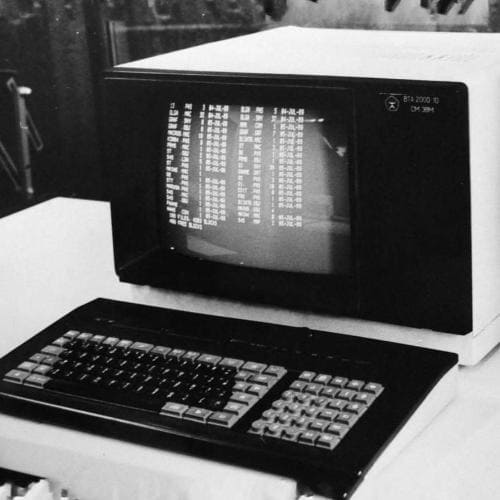

Этап
С 1968 по 1988 годы кафедрой руководит профессор Владимир Николаевич Четвериков.В 1943 году ушел на фронт, участвовал в боевых операциях, войну закончил в Берлине, награжден орденами «Красной звезды», «Отечественной войны 1 степени», «Почета» и медалями. После окончания Великой Отечественной Войны возвращается в МВТУ.
В.Н. Четвериков является автором 12 учебников и многочисленных учебно-методических работ. Его книги «Основы теории и проектирование ЦВМ» (1962, 1965, 1970 гг.), «Преобразование и передача информации в АСУ» (1974, 1977 гг.), «Подготовка и телеобработка данных в АСУ» (1981 г.), «Автоматизированные системы управления предприятиями» (1979, 1984 гг.) и другие являются основой знаний многих поколений специалистов в области информатики, вычислительной техники и автоматизированных систем управления. В.Н. Четвериков явился инициатором создания новой специальности «Автоматизированные системы управления»
В 1974 году по инициативе профессора В.Н. Четверикова была создана общеучилищная лаборатория «Автоматизированная информационная система» (АИС). Научными руководителями АИС были профессора В.Н. Четвериков, В.Н. Гасов, Э.Н. Самохвалов. В это же время на кафедре проводились работы по созданию систем отображения информации и средств взаимодействия человека с вычислительной средой под руководством профессора Владимира Михайловича Гасова. Им была создана лаборатория «Системы отображения информации».
В 1977 году на кафедре произошли некоторые структурные изменения. «Отраслевая лаборатория вычислительных средств и систем управления» под руководством профессора Ю.М. Смирнова перешла на кафедру ИУ-6, где он становится заведующим кафедрой, а «Отраслевая лаборатория вычислительных систем» (кафедра ИУ-6) под руководством профессора А.В. Петрова в полном составе перешла на кафедру ИУ-5.
Петров Алексей Викторович в 1972 году основал в МВТУ «Отраслевую лабораторию вычислительных систем» (ОЛВС), создал школу проектирования автоматизированных систем организационного управления. ОЛВС выполняла совместные работы с научно-исследовательским институтом автоматической аппаратуры (НИИАА) и с научно-исследовательским институтом «Восход». В лаборатории проводились исследования по созданию новых подходов к построению аналитических моделей и методов проектирования автоматизированных систем (руководитель доцент П.Н. Шкатов), разрабатывались новые методы и средства имитационного моделирования (руководитель доцент В.М Черненький), создавались программные средства получения и обработки данных на функционирующей системе (руководитель с.н.с. Ю.А. Григорьев).
Большие интегральные схемы (БИС)
БИС - Элементная база ЭВМ.
Машины предназначались для резкого повышения производительности труда в науке, производстве, управлении, здравоохранении, обслуживании и быту. Высокая степень интеграции способствует увеличению плотности компоновки электронной аппаратуры, повышению ее надежности, что ведет к увеличению быстродействия ЭВМ и снижению ее стоимости.Третье поколение ЭВМ
Четвертое поколение ЭВМ